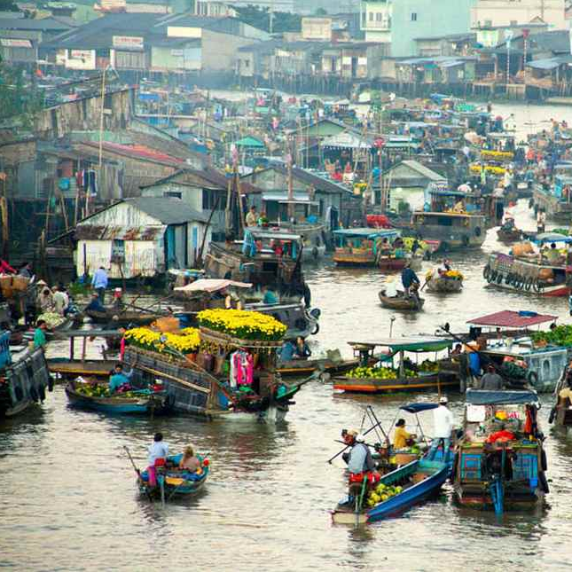

Giới thiệu chi tiết về Chợ Nổi

Về thăm nơi từng được mệnh danh là Tây Đô, vẻ quyến rũ, mê hoặc chính là cảm giác bồng bềnh trên sông Hậu ngắm mặt trời dần lên cao từ những rừng chàm phía xa bạn sẽ cảm nhận được cảm giác bình yên thực sự.
Quay về trang chủ